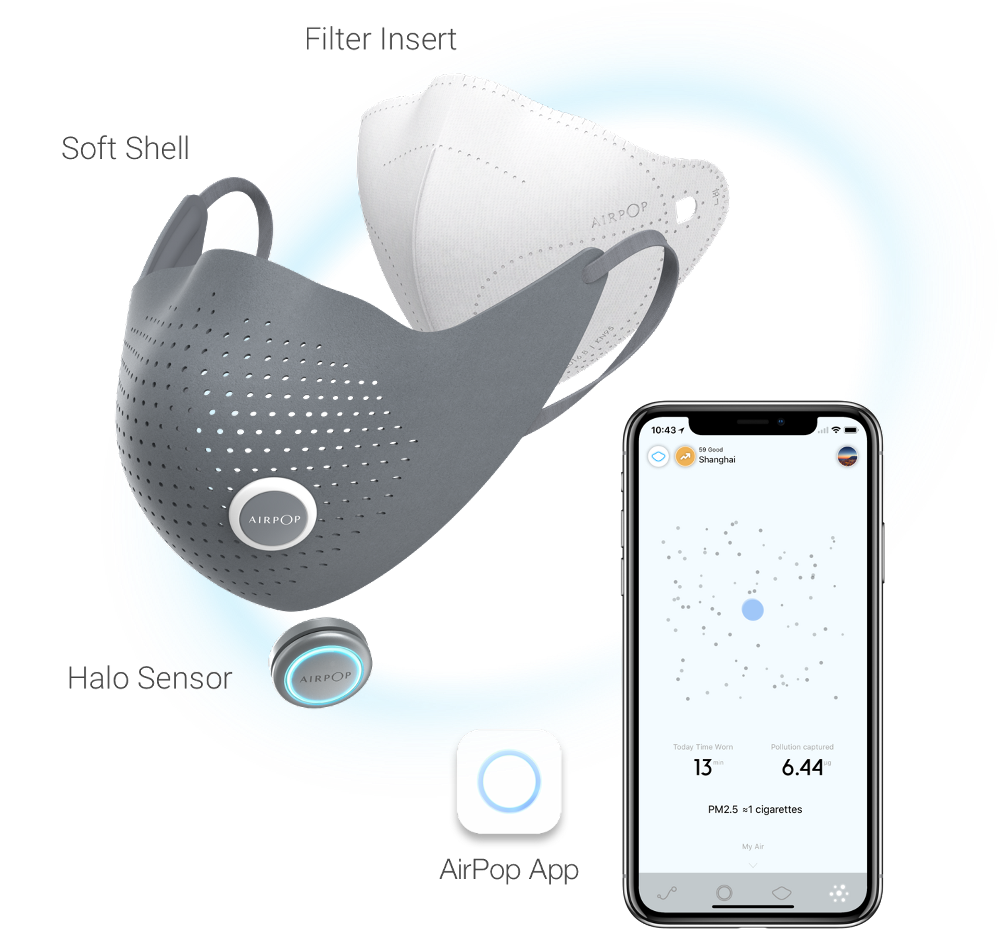

2016
Airpop — Xiaomi Smart Mask
Strategy and experience design for a connected air wearable.

Airpop is an air wearable and healthcare startup within Xiaomi's ecosystem. Working with their team in 2016–2017, the project focused on digital strategy and interaction design for connected, sensing masks — products that do more than filter air.
The interaction model for the Active Mask was built around four conceptual layers: Context (tracking breathing patterns across the city), Shell (device connection and status), Filter (real-time filter condition), and Breathing (live respiratory rhythm visualisation). Each layer mirrored a physical component of the mask itself.
The result was a product that turned a passive medical object into an active health companion — released in early 2018 as part of Xiaomi's ecosystem. Design lead: Simone Rebaudengo, with Chris Hosmer and Alex Xu. © 2017 Aetheris Technology (Shanghai) Co., Ltd.